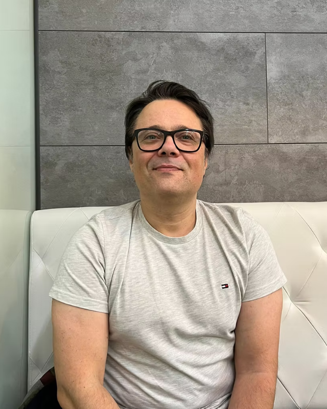

João André: "A Inteligência Artificial nunca poderá ter créditos"
Por Beatriz Fernandes e Joana Araújo Cardoso

João André, produtor musical | Foto: Joana Araújo CardosoNatural do Porto, João André integra a indústria musical como instrumentista, produtor, engenheiro de som, compositor e cantor. Enquanto produtor, já colaborou com artistas como Caetano Veloso, Maceo Parker, Carlos do Carmo, Carolina Deslandes, entre outros. Produziu a música vencedora do Festival da Canção de 2021, “Love is on my side”, interpretada pelos The Black Mamba, bem como a faixa com mais airplay em 2020, “Sei Lá” de Bárbara Tinoco.
Nesta entrevista, João partilha uma visão otimista em relação à Inteligência Artificial (IA) na música e ao papel que esta terá no processo criativo. Comenta, ainda, o atraso de Portugal em relação às questões de direitos autorais e faz um balanço positivo do futuro do setor.
Atualmente, temos vindo a assistir a um crescente uso da Inteligência Artificial na produção musical. Enquanto produtor, encara isso como uma ameaça ou uma ferramenta?
«Eu não acho que um produtor musical vai ser substituído pela Inteligência Artificial, mas um produtor que não use Inteligência Artificial vai ser substituído por um produtor que use (...).»
«Eu encaro a 100% como uma ferramenta. Existe uma citação até, que vem de alguém da economia, que eu gostei muito de ouvir e vou adaptar para a produção musical. Eu não acho que um produtor musical vai ser substituído pela Inteligência Artificial, mas um produtor que não use Inteligência Artificial vai ser substituído por um produtor que use (...). E a partir do momento em que alguém que faz música recusa uma tecnologia, em princípio, automaticamente, está-se a pôr para trás da evolução, não há hipótese. As primeiras pessoas que recusaram usar computadores, na altura parecia que estavam a fazer um finca-pé gigante e que eram pessoas cheias de brio. E passados uns anos são só pessoas ultrapassadas, que não conseguem trabalho porque não sabem trabalhar com um computador. E podemos andar para trás até às primeiras pessoas que usaram um microfone, ou as primeiras pessoas que usaram uma guitarra elétrica. Portanto, a tecnologia acho que é fundamental. Agora, acho que a Inteligência Artificial está a ser, de certa forma, e será mais com o tempo, um dos grandes motores de mudança na produção musical. Vai ser um momento fraturante. E eu como produtor musical já utilizo imensas coisas de Inteligência Artificial, aquilo que dentro do ramo de Inteligência Artificial se chama mais por ‘aprendizagem de máquina’ ou ‘machine learning’, que é basicamente treinar algoritmos para reagirem a determinado tipo de coisas.»
(...) Isso também levanta a questão de se poderá a Inteligência Artificial substituir por completo a criatividade humana?
«Isso é, para já, absolutamente impossível. Não há, tipo, qualquer hipótese. (...) Estamos a falar da aprendizagem de uma máquina e para essa máquina fazer essa aprendizagem tem de se basear em dados, que são dados da criatividade humana. Os algoritmos não vão poder aprender com coisas que já vêm da Inteligência Artificial, porque basicamente não vai ter informação nova nenhuma para ele. Portanto, vai estagnar. E o ser humano nunca vai estagnar, vai estar sempre a fazer as coisas. Imaginemos, é possível uma pessoa não saber fazer um ritmo de hip-hop, mas pegar num sistema analógico e escolher o nome até, que já dá... escolhes o nome, “é este rapaz que eu quero”, e faz um beat. E de repente, tu, que não sabes fazer nada, fizeste um beat de hip-hop. Mas tu tens que escolher o que gostas e o que não gostas, de todas as hipóteses que ele dá, e depois vais misturar com outras coisas, e isso implica sempre criatividade. É sempre mais fácil e é isso que a tecnologia e as ferramentas é suposto fazerem, tornarem as coisas mais fáceis. Portanto sim, acho que sou otimista.»
Vai sempre dar auxílio, de uma maneira.
«Auxílio... E depois a criatividade está também na escolha, no que se faz com aquilo.»
Quando alguém utiliza a Inteligência Artificial para produzir uma música, existem dúvidas sobre quem deve deter os direitos dessa música. Deve ser creditado o software, o programador ou o próprio utilizador?
«A Inteligência Artificial nunca poderá ter créditos, porque está sempre a basear-se em informação que já existe, criada por humanos.»
«Eu acho que essa discussão não se põe, relativamente aos direitos autorais. (...) Aquilo que se refere relativamente a isso é: “Será que se devia creditar o material onde a Inteligência Artificial se esteve a basear?”. A Inteligência Artificial nunca poderá ter créditos, porque está sempre a basear-se em informação que já existe, criada por humanos. Quando muito, esses humanos poderiam ter créditos por terem sido estudados pela Inteligência Artificial.»
Duas empresas dos Estados Unidos, a Suno e a Udio, foram efetivamente processadas por usarem músicas protegidas por copyright para treinar o seu software de IA. Por existirem casos como estes, há a preocupação aqui em Portugal de criar ou atualizar as leis de direitos de autor? É uma conversa que já se tem cá?
«Não, Portugal está atrasadíssimo em relação a essa discussão (...). Acho que essa discussão vai ter primeiro que definir-se nos Estados Unidos, depois definir-se na Europa, nomeadamente em França que é um bocado o centro que dita a ética musical, e depois, só aí, é que chegará a Portugal. (...) Não há nenhuma empresa de Inteligência Artificial sediada em Portugal que esteja a fazer esse tipo de estudos, portanto não.»
Não acaba por ser uma preocupação para quem lida com a Inteligência Artificial aqui em Portugal, poder acontecer uma situação semelhante?
«Não, porque toda a Inteligência Artificial que nós estamos a utilizar neste momento está sempre a ser treinada noutro país. Há uma ferramenta de Inteligência Artificial espetacular que existe agora (...). Eu estou a produzir uma música e quero um coro. E tenho uma pessoa que trabalha comigo, que é uma mulher que canta muito bem e faz a parte do coro, mas de repente eu quero um homem. Eu posso pegar na voz dela, importar para um software e escolher o tipo de voz que eu quero, de um homem, que cedeu a sua voz para ser estudada e dá a sua voz e foi pago para isso. E de repente podes ter uma voz mais grave, mais aguda, (...). Só há em inglês, não existe em português. Portanto, eu que faço essencialmente pop português, nunca poderei utilizar sequer esse tipo de Inteligência Artificial, a não ser que esteja a produzir qualquer coisa em inglês.
«(...) Portugal está mesmo atrasado (...). Não imagino ainda haver problemas de direitos de autor.»
«Portanto, Portugal está mesmo atrasado e para já a única coisa onde nós estamos a utilizar muito a Inteligência Artificial, às vezes em certos softwares, tem a ver com o áudio. Analisam o áudio e dizem “ok, isto está muito grave, devia estar mais agudo, segundo os parâmetros e tal. Então vou já pôr aqui um equalizador e pôr isto mais agudo (...)”. Portanto, nem sequer é preciso muito copyright, é só um equilíbrio de frequências. Na nossa área, tudo o que acabamos por utilizar (...) são pessoas, seres humanos que foram estudados e que foram pagos para isso e que deram a sua humanidade para estudo. Mas não há ainda, não imagino ainda haver problemas de direitos de autor.»
O João mencionou que um produtor que se recuse a atualizar-se e a aprender mais sobre IA fica em desvantagem na indústria, por não acompanhar as novas tecnologias. Enquanto produtor, já sentiu essa pressão para se informar e saber mais, para conseguir corresponder às exigências da profissão?
«Eu sou uma pessoa que, em geral, gosta muito de novas tecnologias, então sinto que fui dos primeiros aqui em Portugal também a abraçar e a procurar e a estudar. A minha afirmação vem muito no sentido de às vezes alguns colegas que se mostram mais renitentes, ou alguns assistentes meus que ficam muito assustados e dizem “ah, mas eles vão fazer o nosso trabalho...”. Não, isto só significa que vocês vão poder estar a fazer coisas mais fixes e a Inteligência Artificial vai fazer as coisas mais seca, vai-vos ajudar. E alguns alunos, que eu também dou aulas de produção, também ficam um bocado renitentes em relação a isso.
«Essa pressão que eu sinto é criada por mim próprio, não sinto que seja o mercado português a criá-la.»
«Mas, por princípio, sinto que estou super bem informado (...). A pressão que eu tenho é em saber mais, porque sei que facilita a vida numa data de coisas. Então eu sinto às vezes a pressão de "saiu esta aplicação nova e devia estar a estudar isto melhor, mas não tenho tempo". Essa pressão que eu sinto é criada por mim próprio, não sinto que seja o mercado português a criá-la.»
Relativamente à diversidade da música... Considera que a Inteligência Artificial pode, por um lado, contribuir para inspirar novos géneros e sonoridades, ou que, por outro, se corre o risco de padronizar a música?
«Eu acho que a Inteligência Artificial deixada como líder da evolução musical só pode padronizar, não existe uma outra alternativa a isso, porque a Inteligência Artificial não vai nunca escolher novos géneros. A Inteligência Artificial vai sempre obedecer a um prompt, a uma direção que nós vamos dar. Podemos dizer "faz uma música tipo Queen, mas põe um cantor tipo Kurt Cobain a cantar". Isto não faz em nada evoluir a música, porque são tudo coisas que já estão feitas, são tudo coisas que já estão estudadas e são tudo coisas que qualquer ser humano pode fazer.»
«Por mais acelerada que seja a aprendizagem da tecnologia, (...) nunca vai ser tão rápido como um ‘momento eureca’ de um ser humano, que de repente sai completamente da caixa.»
«Aparecer uma Billie Eilish a fazer um "Bad Guy" ou uma música dessas que seja revolucionária ou uns Nirvana... Isso requer sempre um ser humano, fazer experiências e erros e estar com outros seres humanos (...). Portanto, o ser humano nunca sabe bem se uma coisa é boa ou não, depende sempre dos outros seres humanos, um bocado, para chegar lá. Então acho que a tendência será sempre, obrigatoriamente, de padronizar, não há outra hipótese. Por mais acelerada que seja a aprendizagem da tecnologia, do algoritmo (...) nunca vai ser tão rápido como um ‘momento eureca’ de um ser humano, que de repente sai completamente da caixa.»
Acerca das tendências emergentes da própria indústria, em que medida acha que a IA apoia nesse sentido? Consegue prever o que terá sucesso?
«Ajuda a analisar dados. Esse tipo de protocolos já existe, coisas que podem determinar certas direções... E a Inteligência Artificial vai ajudar a que isso seja feito de uma forma mais rápida e mais eficiente. Vou dar um exemplo (...). Nos Estados Unidos, que é o centro da música, havia três centros musicais: Nashville, onde era o country todo; Los Angeles e Nova Iorque. Em Nova Iorque, os preços das casas ficaram caríssimos e os estúdios fecharam todos. Los Angeles, os estúdios também fecharam e muitos foram, digamos, ‘reclamados’ para bandas de hip-hop. Então, a maior parte dos músicos, (...) foi morar para Nashville, há dez anos atrás. Significa que tivemos toda uma cultura a nascer ali, tudo o que era pessoas com valor, inteligentes... a própria Taylor Swift foi viver para Nashville (...). Passados dez anos, as pessoas dizem “uau, quem é que ia adivinhar que a música country ia ter sucesso?”. Claro que ia ter, porque as pessoas com qualidade dirigiram-se ali. Portanto, isto tem a ver com as rotas migratórias do talento. É possível analisar estatística, claro que é. Mas fazer um prompt neste momento a dizer “diz-me qual é o estilo musical que vai ter sucesso para o ano”, ele [o ChatGPT] vai-te dar uma resposta qualquer. (...)"
Até porque o próprio ser humano é impossível de prever.
«O ser humano é um bocado impossível de prever. Nós podemos prever tendências. Se toda a gente com qualidade se está a dirigir para uma terra onde se faz country music, se calhar essa gente com qualidade vai começar a fazer country music, mesmo que goste mais de rock ou hip-hop ou pop, vai começar a ter a influência do country nesse estilo que gosta. Nós podemos prever isto mais ou menos, mas não podemos prever a altura em que vai acontecer, quanto tempo é que vai demorar... uma data de coisas.»
Regressando ao problema dos direitos autorais. O uso da IA pode levar a criar algo muito parecido àquilo que, por exemplo o João, pode ter criado enquanto produtor. As leis atuais protegem-no nesse sentido?
«(...) Nós só temos doze notas. (...) Não podemos ser 100% originais eternamente.»
«Existe uma grande confusão acerca dos direitos de autor e é uma área que, de facto, está meia em convulsão. (...) Na música que nós fazemos de raiz europeia, no centro da tonalidade, nós só temos doze notas. Existe uma ordem limitada, nós não podemos ser 100% originais eternamente. (...) Para ser um plágio tem que ser igual num contexto semelhante, tem que ser igual numa duração semelhante e eu tenho que provar que tu ouviste a minha música. Portanto, voltamos à velha história: se a aprendizagem do algoritmo foi feita com essa música, e de repente sai uma música igual, aí de facto os direitos de autor entram, porque a Inteligência Artificial ouviu aquela música.»
E é possível provar que realmente foi usado?
«Sim, isso tem a ver com legislação, que é aquilo que se está a tentar avançar o mais rápido possível. Nos Estados Unidos estão a ser postos travões, assim violentos, relativamente a isto tudo. Esses processos de que vocês falam, tudo isto está a tentar pôr algum travão a dizer “Ok malta, a legislação não vai acompanhar, portanto vamos ter que ter alguma calma”. Neste momento, eles estão-se a basear mais em vertentes meio teóricas de como se constrói uma melodia, do que propriamente em melodias que já existem. (...) A não ser que seja declarado “uma melodia à Beatles, uma melodia à Elton John (...)”. E aí obviamente (...) nem sequer podes cobrar direitos de autor, nem sequer a podes registar. (...) Há esses travões, que para já estão a proteger a indústria. Nos próximos, sei lá, cinco anos vai estar tudo muito mais definido.»
O João já se mostrou muito otimista em relação ao futuro da Inteligência Artificial na produção musical. Como é que imagina, em termos de oportunidades e desafios, o futuro da música com a IA?
«Eu gosto dessa ideia de que, de repente, vai haver uma explosão de criatividade (...)»
«Eu acho que vai ser muito mais simples criar, vai ser muito mais fácil criar. (...) Voltando um bocadinho atrás, eu tenho 48 anos. Significa que eu passei por uma parte da minha carreira antes dos computadores e uma parte depois. Significa que eu tive que fazer uma aprendizagem musical ainda 'à antiga', tive que aprender os instrumentos todos, aprender muita coisa. E havia muitas alturas (...) em que eu queria ser criativo, fazer determinado tipo de coisas e era completamente delimitado pelo facto de estar em Portugal e haver pouco acesso a material tecnológico e pela minha própria dificuldade em conseguir passar essas coisas para algo que se pudesse ouvir. E eu acho que a Inteligência Artificial vai acabar com isto, eu acho que as pessoas vão poder começar a ser criativas muito mais cedo, muito mais rapidamente. (...) Como amante de música, como amante de arte em geral, eu gosto disso. Eu gosto dessa ideia de que, de repente, vai haver uma explosão de criatividade (...). E eu acho que isso é uma coisa bonita, acho que isso é bonito.»
Por ser uma ferramenta acessível, abre portas a muita mais gente, que se calhar não teria as condições de produzir música.
«Claro, os computadores já trouxeram isso. Hoje em dia com um ‘laptopzinho’ eu consigo fazer o que me apetecer e há vinte anos atrás era absolutamente impossível. Tinhas de ter milhares e milhares e milhares de euros para teres aquilo que tens num computador. A Inteligência Artificial eu acho que vai ser isso, mas em tempo. O tempo que tu precisas para conseguir fazer qualquer coisa vai ser reduzido de uma forma avassaladora. Onde eu acho que se vai sentir, curiosamente, a pressão vai ser no topo da escala. (...) Aqueles que conseguem ler um livro inteiro e decorar tudo, esses a Inteligência Artificial não ajuda, mas ajuda aqueles que demoram mais tempo e que têm que sublinhar e voltar a ler até fixarem as coisas. Esses a Inteligência Artificial ajuda mais. E eu acho que isto também vai acabar por provocar no topo uma pressão de ser ainda melhor, e também se puxarem a mais. Já senti isso com os computadores, de repente pessoas mais novas que eu estavam a fazer já coisas a soar incrível com um computador. E eu estava tipo “ok, eu tenho que ser mais forte, trabalhar mais”.»
Então, na sua opinião, vai impulsionar de uma maneira até muito positiva?
«Acho que sim. Acho que o potencial é de uma explosão tecnológica, ao nível do que foi a Internet. O aparecimento da Internet mudou radicalmente a existência das pessoas. Eu acho que a Inteligência Artificial, não estando ainda nesse sítio, tem esse potencial, tem o potencial de daqui a quinze anos nós dizermos “ei, tu lembras-te como é que era antes?”. (...) Estamos ainda na fase mesmo raiz de início da Internet, que é só mandar um mail e não precisamos de mandar uma carta. Eu acho que ainda estamos nesse momento. (...)»
Vemos que temos, à partida, um futuro positivo neste sentido.
«Agora, o ser humano também tem sempre a capacidade de estragar tudo. Da mesma forma que a Internet trouxe coisas fantásticas, também trouxe coisas terríveis. (...) E eu não sou ingénuo para achar que a Inteligência Artificial só vai trazer coisas boas. Vai trazer coisas péssimas porque, lá está, porque é o ser humano que está a fazer, faz parte.»
Há que aprender a navegar por isso.
«É um bocado isso. Focar no que é bom.»